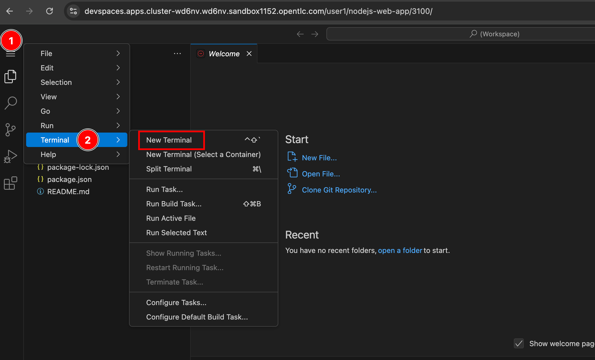

Configuring the fuse-overlayfs Storage Driver
By default, newly created workspaces that do not specify a devfile will use the Universal Developer Image (UDI) container image.
The Universal Developer Image (UDI) container image has Podman and Buildah tools pre-installed, which you can use to build and push container images within a workspace. However, Podman and Buildah in the UDI are configured to use the vfs storage driver which does not provide copy-on-write semantics in the workspace file system. For more efficient image management and better performance, you can configure the fuse-overlayfs storage driver, which supports copy-on-write semantics.
There are two ways you can enable fuse-overlayfs in Dev Spaces for improved performance:
-
For workspaces that are already provisioned, and belonging to certain users
-
For all user workspaces within the cluster
Lab: Enabling fuse-overlayfs for Specific Workspaces
In this hands-on lab, you will enable the fuse-overlayfs storage driver for an already existing workspace.
-
Log in to Dev Spaces dashboard as the
user1user. Launch a newNode.js Expressworkspace from the dashboard. -
Once the IDE loads fully, launch a new terminal by expanding the hamburger menu (three vertical bars), and then click
Terminal > New TerminalFigure 1. Launch a new terminal in Workspace -
Verify that by default, the
vfsstorage driver is used.web-nodejs-sample $ podman info | grep graphDriver graphDriverName: vfs -
Before enabling the
fuse-overlayfsdriver, you need to enable the/dev/fusedevice for the workspace. Start off by using theocclient and log in as theadminuser. List the workspaces foruser1.$ oc login -u admin <OpenShift API URL> $ oc get devworkspace -n user1-devspaces NAME DEVWORKSPACE ID PHASE INFO nodejs-web-app workspacee69523816d5c43c8 Running https://... -
Patch the
nodejs-web-appworkspace to enable the/dev/fusedevice.$ oc patch devworkspace nodejs-web-app -n user1-devspaces \ --patch '{"spec":{"template":{"attributes":{"pod-overrides":{"metadata":{"annotations":{"io.kubernetes.cri-o.Devices":"/dev/fuse"}}}}}}}' \ --type=merge devworkspace.workspace.devfile.io/nodejs-web-app patched -
Verify that the
/dev/fusedevice now exists in the workspace$ stat /dev/fuse File: /dev/fuse Size: 0 Blocks: 0 IO Block: 4096 character special file Device: ... Access: ...If, however, you see:
stat: cannot statx '/dev/fuse': No such file or directoryIt means that the /dev/fuse device is not enabled, and the
fuse-overlayfsstorage driver will not work. Check that you have run the commands correctly as outlined in previous steps. -
Next, to enable the
fuse-overlayfsstorage driver, inspect the contents of the~/.config/containers/storage.conffile, and note that Podman and Buildah in the workspace is configured to use thevfsdriver by default:web-nodejs-sample $ cat ~/.config/containers/storage.conf [storage] driver = "vfs" -
Edit the
~/.config/containers/storage.conffile inside the workspace and make the following changes (Use theviorvimeditor to make the changes):[storage] driver = "overlay" [storage.options.overlay] mount_program="/usr/bin/fuse-overlayfs" -
Delete some cached files using the old
vfsdriverweb-nodejs-sample $ rm -rf ~/.local/share/containers/storage -
Verify that the
fuse-overlayfsstorage driver is in useweb-nodejs-sample $ podman info | grep overlay graphDriverName: overlay overlay.mount_program: Executable: /usr/bin/fuse-overlayfs Package: fuse-overlayfs-1.13-1.module+el8.10.0+22202+761b9a65.x86_64 fuse-overlayfs: version 1.13-dev Backing Filesystem: overlayfs
You have now enabled the fuse-overlayfs storage driver in a running workspace. The manual steps to enable it are not optimal at scale. You need to enable the driver globally for all workspaces. One way to approach this, is to build a custom image and make all the configuration changes needed for the fuse-overlayfs storage driver. Another approach is to configure this globally in the CheCluster CR configuration so that all workspaces launched by users have this driver enabled by default. You will do so in the next lab.
Lab: Enabling fuse-overlayfs for all Workspaces
In this hands-on lab, you will enable the fuse-overlayfs storage driver for all workspaces in the OpenShift cluster. You do this by creating a ConfigMap resource for the storage.conf file, and then mounting this configuration file (which enables the fuse-overlayfs storage driver) inside containers running in the workspace.
-
Log in to OpenShift as the
adminuser using the `oc`client$ oc login -u admin <OpenShift API URL> -
Create a ConfigMap resource file named
fuse-overlayfs.yamlthat mounts thestorage.conffile into containers running in a workspace:kind: ConfigMap apiVersion: v1 metadata: name: fuse-overlay namespace: openshift-devspaces labels: (1) app.kubernetes.io/part-of: che.eclipse.org app.kubernetes.io/component: workspaces-config annotations: (2) controller.devfile.io/mount-as: subpath controller.devfile.io/mount-path: /home/user/.config/containers/ data: (3) storage.conf: | [storage] driver = "overlay" [storage.options.overlay] mount_program="/usr/bin/fuse-overlayfs"1 Labels to indicate that this configuration is related to workspace configuration 2 Annotations indicating the path inside the container where the storage.conf file must be mounted 3 The actual storage.conf configuration file contents -
Create the ConfigMap
$ oc apply -f fuse-overlayfs.yaml configmap/fuse-overlay created -
Edit the
devspacesCheCluster instance (using the commandoc edit checluster/devspaces -n openshift-devspaces) and enable the/dev/fusedevice for all containers in workspaces, by adding the following:kind: CheCluster apiVersion: org.eclipse.che/v2 spec: devEnvironments: workspacesPodAnnotations: io.kubernetes.cri-o.Devices: /dev/fuse -
Log in as the
user1user and launch an empty workspace from the dashboard. Launch a new terminal in the web IDE and first verify that the/dev/fusedevice exists$ stat /dev/fuse File: /dev/fuse Size: ... Device: 700078h/7340152d... ... -
Verify that the
storage.confconfiguration you provided in the ConfigMap is mounted inside the workspace$ cat ~/.config/containers/storage.conf [storage] driver = "overlay" [storage.options.overlay] mount_program="/usr/bin/fuse-overlayfs" -
Verify that the
fuse-overlayfsstorage driver is in use$ podman info | grep overlay graphDriverName: overlay overlay.mount_program: Executable: /usr/bin/fuse-overlayfs Package: fuse-overlayfs-1.13-1.module+el8.10.0+22202+761b9a65.x86_64 fuse-overlayfs: version 1.13-dev Backing Filesystem: overlayfs